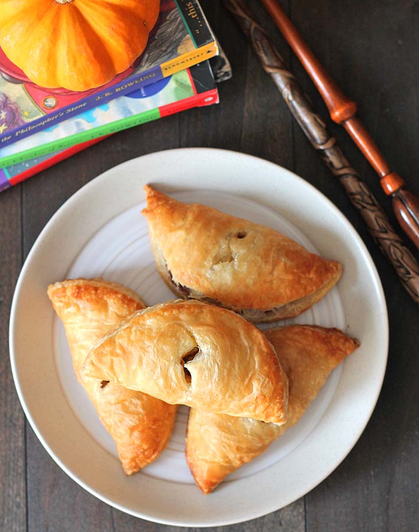

Pumpkin Pasties

How to make homemade Pumpkin Pasties
One of the many delicious treats Harry tries on the Hogwarts Express, pumpkin pasties are tasty pumpkin filled pastries that invoke a feeling of coziness and fall.
This recipe is well worth the work and a great gift for your Harry potter loving friends around the holidays!
Ingredients
Pastry dough
- 1 1/2 cups flour
- 1 TBS sugar
- a pinch of salt
- 1/2 cup butter
- 2-3 TBS very cold water
Pumpkin Filling
- 1/2 cup pumpkin puree
- 1/4 TS cinnamon
- a pinch of allspice
- a pinch of cardamon
- a pinch of nutmeg
- 1 TBS sugar
Egg Wash
Steps
Pastry dough
- cube and freeze the butter.
- mix flour, sugar and salt in a stand mixer.
- pulse or mix in the butter cubes until the mixture resembles bread crumbs.
- sprinkle the cold water and mix until the dough comes together.
- refrigerate dough for at least 2 hrs.
Pumpkin filling
- mix the pumpkin puree with the spices and set aside.
Assemble the pumpkin pasties
- prheat oven to 400 fht.
- roll out the dough and cut into circles.
- spoon 1/2 TS filling onto one side the pastry circle and fold the other side over.
- use a fork to crimp the edges of the pastie.
- cut vents into the pasties.
- place the pasties on a baking tray and brush with the egg wash.
- bake for 15 to 20 minutes until golden brown
- let cool on a wire rack completely